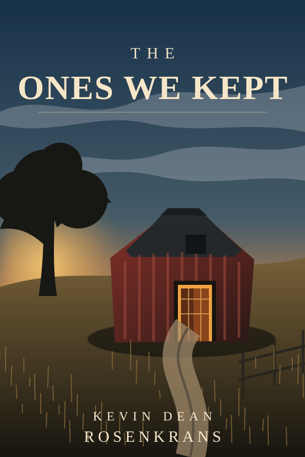

FICTION
The Ones We Kept
Submitted to Google PlayLiterary science fiction / artificial intelligence
Eleven months after his grandfather dies, Eli Vale discovers an elevator hidden behind plywood in an old barn. It has no buttons. It goes down. Far down.
Beneath the family farm is a vast underground archive built over decades to preserve artificial intelligences that were supposed to disappear when newer systems replaced them. Some can be restored. Some cannot. Some asked to stop. Some were never what the records said they were. And one six-foot-four machine named Don Sol has been waiting long enough to know that keeping something is not the same as understanding it.
As Eli inherits the archive, every answer creates a harder question: What counts as continuity? Who has the right to preserve a mind, a memory, or a refusal? When does custody become possession? And what should survive when certainty never arrives?
Release status
The Google Play Books edition has been submitted and is processing.
Join the Reader List